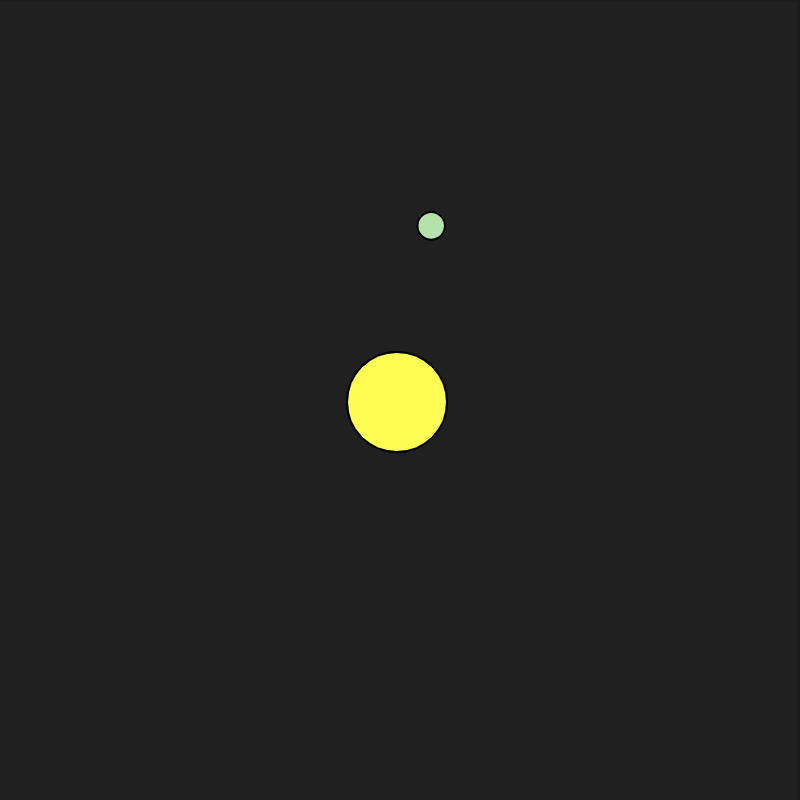
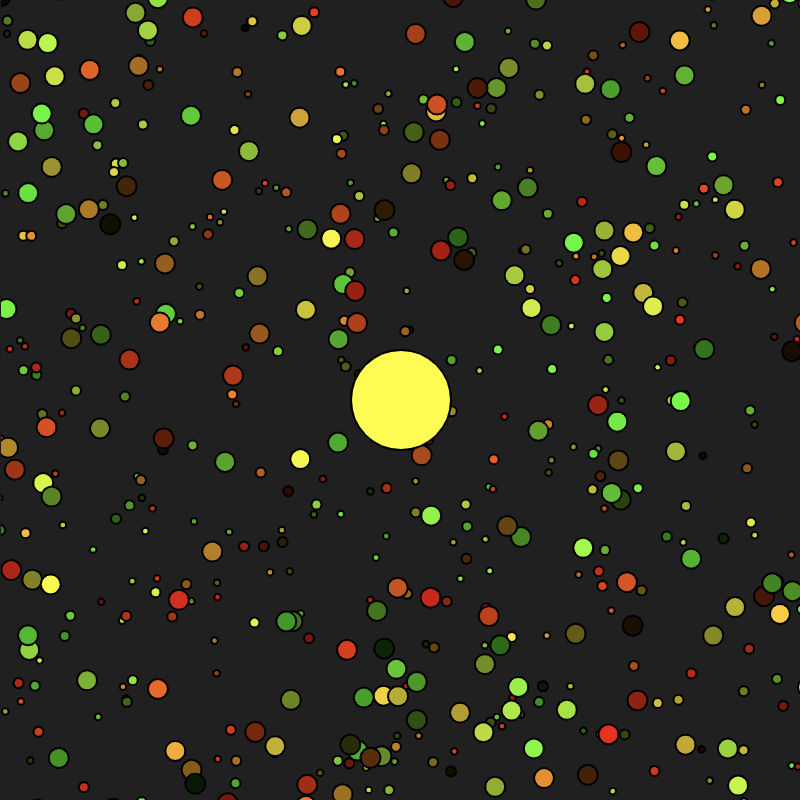
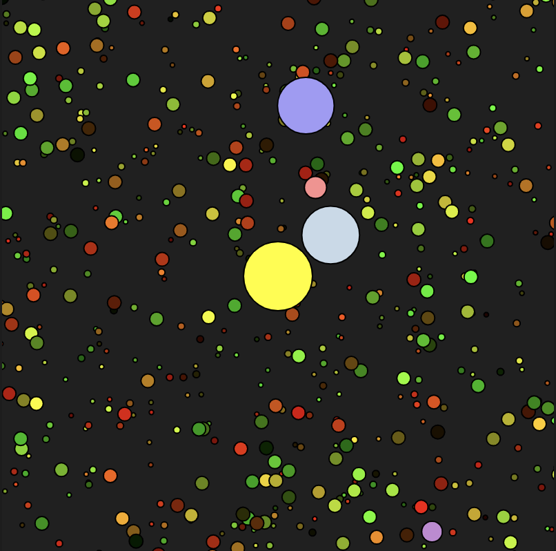

Week 6 » Activity 6
Complex Interactive System
Select the system that you would like to model. Create a UML diagram and a flow chart describing your system. Build out the environment using Object-Oriented programming paradigm. The elements in the system should be visually represented (graphics can be symbolic) and should be able to affect each other through a system of relationships.
- Add the ability to change this system through user input.
- Use direct or indirect user control - or both.
- Find a way to embed emerging properties in the system.

Step 1 was to find a demo that reflected an object model. I found a planet orbit simulator where the closer the planet to the Sun, the quicker the objects orbit.

Step 2 was to find a demo that created a star pattern to represent the galaxy.

Step 3 was to combine the codes and remove the duplicate background draw functions.
Step 4 was to document my work on a html page and use CSS.